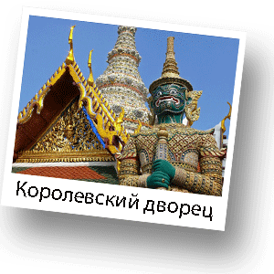
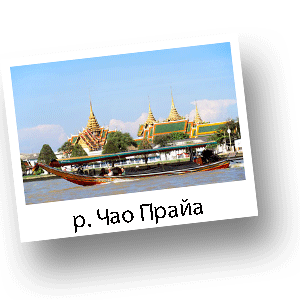
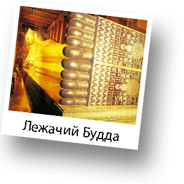

Обзорная экскурсия - Королевский Бангкок

Эта экскурсия очень понравится Всем, кому интересно познакомится с историей, культурой и архитектурой Королевства Таиланд. Вы посетите поистине роскошные места Бангкока. Увидите архитектурные объекты необычайной красоты и значимости. Королевский дворец является резиденцией тайских королей начиная с 18 века. Строительство дворца задумывалось еще в 1782 году. После завершения строительства во время правления последующих Королей вокруг дворца возникали новые пристройки и храмы. Сейчас Королевский дворец представляет из себя целый ансамбль. Большой Королевский дворец является самым грандиозным дворцом в истории Сиама и современного Таиланда. Проект был готов к 1782 году и всего за три года было завершено строительство.

Этот дворец являлся резиденцией Рамы I, Рамы II, Рамы III, Рамы IV. А вот братья-Короли Рама V, Рама VI и Рама VII предпочли построить свои личные резиденции, хотя Большой Королевский дворец все равно считали главной резиденцией. Король Рама VIII вернулся из-за границы в 1945году и снова устроил здесь резиденцию, однако через год он умер. Загадка его смерти до сих пор не раскрыта. Именно по этой причине брат короля - ныне правящий Король Рама IX переехал в другой дворец. Сегодня дворец используется Королевской семьей, здесь проводят различные торжества, свадьбы, похороны, различные буддийские праздники, государственные приемы. После посещения Королевского дворца Вы отправитесь в Храм Изумрудного Будды, который находится в стенах дворца.

Храм был построен по приказу Короля Рамы I для поклонения Будде Королевской семьей. Сегодня храм открыт и для простых смертных. Здесь хранится знаменитая и самая почитаемая в Таиланде статуя Будды, сделанная из одного крупного куска жадеита (не изумруда...хотя статуя носит название Изумрудного Будды). Далее по маршруту Вы посетите знаменитейший храм лежачего Будды Ват По - Wat Pho Temple. Это один из самых старых храмов Бангкока, где находится уникальное изваяние лежачего Будды. Длина фигуры составляет 46 метров и высота около 15 метров. Данная поза Будды символизирует состояние ожидания перехода Будды из этого мира в нирвану - абсолютный мир бессмертия. Стопы статуи инкрустированы жемчугом и отображают 108 знаков, символизирующих истины буддизма. Кроме того храм является центром медитации и тайского массажа. Здесь же находится знаменитая школа тайского массажа, где все желающие могут пройти курс обучения. Храм был построен в 16 веке и в общей сложности располагает более чем 1000 изображений Будды. Далее на лодке Вы совершите небольшой круиз по каналам Бангкока. Во время путешествия Вы сможете насладиться городом и отдохнуть. Прогулка оставляет приятное впечатление это, своего рода, Азиатская Венеция. Насладившись экскурсией Вы отправитесь на главную туристическую улицу Каосан, где Вас ожидает обед и покупка памятных сувениров и подарков родным и близким.
Рекомендации по одежде:
Удобная одежда и обувь, закрытые плечи и колени

4400 Бат
Выезд - 7:00
5000 Бат
Возвращение - 19:00
6000 Бат
*Стоимость указана за человека
**Дети до 3 лет - бесплатно, без предоставления отдельного места в транспорте
***Дети от 3 до 10 лет - 3500 Бат
Маршрут:
Посещение Королевского дворца, Храм изумрудного Будды, Храм лежачего будды, Обед на главной туристической улице Каосан, Катание на лодке по каналам реки Чао Прайа.
В стоимость включено:
Трансфер, русскоговоряший гид, все входные билеты, вода.
Дополнительные расходы:
Личные расходы, чаевые, обед.